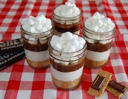

Ken je dat gevoel, dat je eigenlijk elke kerst hetzelfde dessert wil omdat het zó lekker was? Na het eten van deze s'mores mini-trifle snap je dat gevoel helemaal
1. Breng ⅓ van de slagroom op middelhoog vuur in een steelpannetje aan de kook. Neem van het vuur, roer ⅘ van de chocoladedruppels erdoor en laat 10 min. staan. Roer met een garde tot een glanzend, egaal mengsel. Laat in ca. 30 min. afkoelen, maar roer regelmatig. Voeg de rest van de chocolade toe aan de afgekoelde ganache.
2. Klop ondertussen de rest van de slagroom stijf met de vanillesuiker. Smelt de boter in een steelpan op laag vuur. Maal de koekjes in een keukenmachine fijn. Meng met de gesmolten boter.
3. Verdeel achtereenvolgens de helft van de koekjes, de helft van de ganache, de slagroom, de rest van de koekjes en de rest van de ganache over de glazen. Top af met de marshmallows. Karamelliseer met behulp van de crème brûlée-brander.
